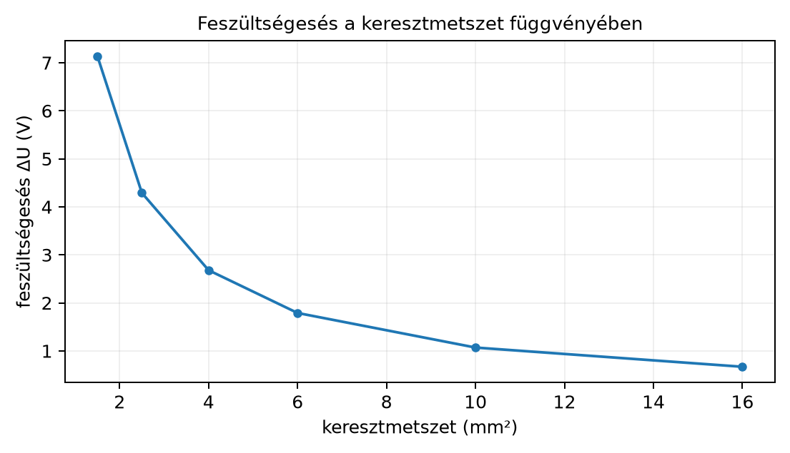

Statikus változat (mint a PDF-ben)
A műhelyben a 3 méteres hálózati kábel alig számít, a 80 méteres kerti elosztó viszont már igen: ugyanaz a kábel ellenállásként viselkedik, és a feszültség egy részét „megeteti” maga a vezető. A fogyasztó kapcsain ezért kisebb feszültség jelenik meg, mint a betáplálásnál. A lámpa halványabb, a fűtőtest lassabban fűt, a motor nehezebben indul, és eközben a vezeték maga is melegszik. Ha csak a terhelhetőségre méretezünk, hosszú kábelnél könnyen lehet, hogy a kábel nem melegszik túl, de a feszültségesés már elfogadhatatlan. Ezért kell ezt az ellenőrzést is elvégezni.
Szemléletes kép. Képzeld el a kábelt úgy, mint két, sorba kötött ellenállást a fogyasztó előtt és után. Az egyik a fázisvezető, a másik a nullavezető. A fogyasztó árama mindkettőn átfolyik, ezért a feszültség mindkettőn esik. A fogyasztó kapcsain mérhető feszültség tehát:
ahol a teljes feszültségesés a kábelen. A cél az, hogy a megengedett, kis érték alatt maradjon.

Az ábra azt mutatja, hogy azonos áram és hossz mellett a nagyobb keresztmetszet kisebb ellenállást, tehát kisebb feszültségesést okoz. A gyakorlatban a kérdés mindig az: mekkora az a minimális keresztmetszet, amely mellett a feszültségesés a megengedett határ alatt marad.
Definíció. A feszültségesés a vezetéken vagy a vezetékrendszeren a terhelő áram hatására fellépő feszültségkülönbség. A fogyasztó kapcsain ez a feszültség forrásoldali feszültség és a feszültségesés különbsége. A feszültségesést voltban vagy százalékban adjuk meg:
ahol egyfázisú esetben , háromfázisú esetben .
Szabály. A feszültségesés alapját a terhelőáram és a vezeték impedanciája adja. Ha a vezetéknek csak az ellenállását vesszük figyelembe (a reaktanciát elhanyagoljuk), a legfontosabb képletek:
Egyfázisú áramkör, oda-vissza két vezető:
ahol a terhelőáram (ohmos terhelésnél ), a terhelés teljesítménytényezője, az egyirányú vezetékhossz, a vezetőanyag fajlagos vezetőképessége, a fázisvezető keresztmetszete. A nullavezetőt ugyanolyan keresztmetszetűnek feltételezzük.
Háromfázisú, szimmetrikus terhelés:
ahol a vonali áram, a fázisvezető hossza, a terhelés teljesítménytényezője.
Összefüggés. A fenti egyszerű képletek a reaktancia elhanyagolásával érvényesek. Ha a vezeték reaktanciáját is figyelembe kell venni (nagy keresztmetszet, kis , hosszú kábel), a pontosabb alak:
Egyfázisú:
háromfázisú:
ahol és a vezeték hosszegységre eső ellenállása és reaktanciája. A gyakorlati méretezésben a szabványos táblázatok vagy gyártói adatlapok tartalmazzák ezeket az értékeket. A számértékek ellenőrzését a gyártói adatlapok és a vonatkozó szabvány alapján kell elvégezni (ellenőrizendő: aktuális vezeték-ellenállás és reaktancia adatok).
A fajlagos vezetőképesség tipikus, egyszerű számolásra használt értéke rézre hideg állapotban kb. , alumíniumra kb. (ellenőrizendő: anyagminőségtől és hőmérséklettől függ; meleg üzemi állapotban a réz vezetőképessége kisebb, ezért a pontos számításhoz korrigált értéket kell használni). A vezeték melegedése miatt üzemi hőmérsékleten a fajlagos ellenállás nagyobb, a fajlagos vezetőképesség kisebb, mint hidegen. Egyszerű példákban 56-tal számolunk, de jó tudni, hogy a méretezési szabványok meleg üzemi ellenállással dolgoznak.
Szabvány. A kisfeszültségű villamos berendezések feszültségesésére a vonatkozó magyar és európai szabályozás, elsősorban az MSZ HD 60364 sorozat és a hálózati engedélyes előírásai adnak követelményeket. A szokásos tervezési értékek: világítási áramköröknél legfeljebb kb. 3%, egyéb fogyasztóknál kb. 5% a csatlakozási ponttól a fogyasztóig. Motorindításkor ennél nagyobb, rövid idejű feszültségesés is megengedhető, de ezt a motor nyomatéka és a védelmek kioldási viszonyai határozzák meg. A pontos értékek a mindenkori szabványtól és a hálózati engedélyes helyi előírásaitól függnek (ellenőrizendő: aktuális MSZ HD 60364-5-52 és az elosztóhálózati engedélyes követelményei). A könyv egységes tanulási keretét – közcélú hálózatról táplálva 3 % / 5 %, saját transzformátorról 6 % / 8 % (világítás / egyéb), szakaszokra szétosztva – a Tanulási adattáblák feszültségesés-keret táblája foglalja össze. A mérőhely és a lakáselosztó közötti fővezetékre ebből a keretből csak egy rész jut; a Mintaház fővezetékének számítását a Csatlakozás a közcélú hálózathoz, mérőhely alfejezet mutatja.
Miért kell korlátozni? A fogyasztó teljesítménye a kapocsfeszültségtől függ. Egy fűtőtest ellenállása közel állandó, ezért a leadott teljesítmény a feszültség négyzetével arányos: ha a feszültség 10%-kal csökken, a teljesítmény kb. 19%-kal kisebb. A motorok nyomatéka is a feszültség négyzetével arányos, így már 10% feszültségesés is jelentős indítási nehézséget okozhat. A világítás fényereje is csökken, a LED-es tápegységek és elektronikus eszközök pedig hibásan működhetnek. Ezért a feszültségesésnek van egy gyakorlati felső határa.
Gyorstábla a helyszínre. A szerelő a helyszínen gyakran csak azt kérdezi: „ezzel a kábellel ilyen hosszan elmehetek-e?”. Erre ad gyors, nagyságrendi választ a következő két táblázat. A feszültségesés képletéből a hosszat kifejezve a legnagyobb egyirányú vezetékhossz egyfázisú körben
ahol (5 %), = 230 V, illetve 400 V, a terhelés a védelem névleges áramával egyenlő (, a legkedvezőtlenebb tartós eset), , és a vezetőt meleg (70 °C-os) állapotban vesszük: , azaz (a Tanulási adattáblák függelék meleg értéke). A cellákban álló értékek lefelé kerekítettek, mert a legnagyobb hossznál a kerekítés csak a biztonság felé történhet.
![Legnagyobb vezetékhossz (m) 5 % feszültségeséshez – egyfázisú, 230 V - Képletből számolt, lefelé kerekített legnagyobb egyirányú hossz (m): l_max = ε·U·κ·A/(2·I_n), ε = 5 %, I = I_n terheléssel, cos φ = 1, meleg (70 °C-os) rézér: ρ = 1,2 · 0,0175 = 0,021 Ω·mm²/m, κ ≈ 47,6 m/(Ω·mm²), reaktancia nélkül. 3 %-os határhoz a hosszak 0,6-szorosa; ha az előtte lévő szakaszon már van esés, a maradék %-kal arányosan kisebb. Tájékoztató gyorstábla, nem helyettesíti a számítást; az I_z és a kioldási feltétel ettől függetlenül ellenőrizendő.](assets/ve038-diagram-1.png)
![Legnagyobb vezetékhossz (m) 5 % feszültségeséshez – háromfázisú, 400 V - Képletből számolt, lefelé kerekített legnagyobb egyirányú hossz (m): l_max = ε·U·κ·A/(√3·I_n), ε = 5 %, I = I_n terheléssel, cos φ = 1, meleg (70 °C-os) rézér: ρ = 1,2 · 0,0175 = 0,021 Ω·mm²/m, κ ≈ 47,6 m/(Ω·mm²), reaktancia nélkül. 3 %-os határhoz a hosszak 0,6-szorosa; ha az előtte lévő szakaszon már van esés, a maradék %-kal arányosan kisebb. Tájékoztató gyorstábla, nem helyettesíti a számítást; az I_z és a kioldási feltétel ettől függetlenül ellenőrizendő.](assets/ve038-diagram-2.png)
A sorok a keresztmetszetet, az oszlopok a védelem névleges áramát adják. A cellák árnyalata (fekete-fehér nyomtatásban szürke) csak a nagyságrendet érzékelteti; a döntéshez mindig a cellába írt számot olvasd. Két használati példa. (1) Egyfázisú, 16 A-es aljzatkör 2,5 mm²-es rézvezetékkel: a táblázat 42 m-t ad 5 %-ra; világítási körnél (3 %) ennek 0,6-szorosát, kb. 25 m-t. (2) Ha a lakáselosztóig már 1,2 % esés van, a leágazásra 5 − 1,2 = 3,8 % marad, ezért a hossz a táblaérték -szorosa: 16 A, 2,5 mm² esetén kb. 32 m. A gyorstábla csak a feszültségesésre felel. A vezeték -terhelhetőségét (lásd a Terhelhetőség, melegedés és javítótényezők alfejezetet) és a kioldási feltételt (hurokimpedancia) ettől függetlenül ellenőrizni kell; hosszú, kis keresztmetszetű leágazásnál gyakran éppen a kioldási feltétel dönt. A pontos ellenőrzést a következő kidolgozott példák lépései mutatják.
A vezetéket nemcsak feszültségesésre, hanem terhelhetőségre, védelemre és zárlati viszonyokra is méretezni kell. A feszültségesés-ellenőrzés e folyamat egyik eleme.
Méretezési lépések.
Továbbvitt eredmény. Ez a lépéssor a vezetékméretezés általános váza. A Vezetékvédelem, koordináció és zárlati áram, a Védővezető, PEN és a keresztmetszet méretezése, valamint a Méretezés: terhelés, feszültségesés és zárlat egyszerű esetekben alfejezetek erre az áramkör-méretezési rendre építenek.
Szabvány. A vezetékméretezés és a feszültségesés ellenőrzése a kisfeszültségű villamos berendezések szabványcsaládjában szerepel. Az MSZ HD 60364-5-52 foglalkozik a vezetékek terhelhetőségével és szerelési módjaival, az MSZ HD 60364-5-54 a földeléssel és védővezetőkkel. A feszültségesésre vonatkozó ajánlások és határértékek a szabvány és a hálózati engedélyes előírásai szerint pontosítandók. A méretezésnél a vezeték reaktanciáját, meleg üzemi ellenállását, a korrekciós tényezőket és a környezeti hőmérsékletet is figyelembe kell venni (ellenőrizendő: pontos szabványhivatkozás és hatályos értékek).
Egy családi ház kertjében 40 méter hosszú, -es gumikábellel kötöttek be egy 3 kW-os hősugárzót. A kismegszakító nem oldott le, mert a terhelhetőség éppen elég volt, de a készülék nem fűtötte a helyiséget elvártan. A szerelő a fogyasztó kapcsain 214 V-ot mért 230 V helyett, vagyis (). A fejezet képlete hideg vezetőre árammal -ot () ad; a mért többlet a meleg vezető nagyobb ellenállásából és a dugaszolós csatlakozások átmeneti ellenállásából ered – ez utóbbi melegedést is okoz, ezért a csatlakozókat is ellenőrizni kell. A hősugárzó leadott teljesítménye a feszültség négyzetével csökkent, ezért a komfort nem alakult ki. A javítás: -es kábelre cserélték a vezetéket, amivel a feszültségesés a képlet szerint kb. -ra () csökkent. Ez az eset mutatja, hogy a feszültségesés-ellenőrzés nem elméleti formaság, hanem a fogyasztó működését közvetlenül befolyásolja.
Tünet. A konyhai aljzatkörön a vízforraló bekapcsolásakor a lámpa „pislog”, és az egyik dugaszolóaljzat melegszik.
Adatok (jogosult szakember mérése, te az eredményt értékeled; példaadat). NYM-J 3x2,5, az elosztótól 25 m; ohmos terhelés 8,28 A; terhelés alatt az elosztó kapcsain 229 V, az aljzatnál 219 V.
Számítás. A mért hurokellenállás (fázis + nulla):
A várt érték hidegen , meleg érrel kb. .
Következtetés. A körben kb. 0,8 Ω többletellenállás van valahol (). Ha egy ponton koncentrálódik, ott hő fejlődik egy kis kötési helyen: ez tűzveszélyes.
Szabály. Ha a mért feszültségesés lényegesen (például másfélszeresnél is jobban) nagyobb a számítottnál, az kötési hibára utal, és nem arra, hogy kevés a keresztmetszet. (Előbb ellenőrizd, hogy a hossz, a keresztmetszet és az áram adata helyes-e.)
Lokalizálás. Feszültségmentesítés az öt biztonsági szabály szerint (lekapcsolás, visszakapcsolás elleni biztosítás, feszültségmentesség ellenőrzése, földelés és rövidre zárás, szomszédos feszültség alatti részek lefedése); utána a kötődobozok és aljzatok kötéseinek szemrevételezése (elszíneződés, megolvadt szigetelés), majd szakaszonként ellenállásmérés a kötési pontokon át kis ellenállás mérésére alkalmas műszerrel. A hurokimpedancia-mérést a javítás után meg kell ismételni, lásd Mérések II.: hurokimpedancia, zárlati áram, FI-vizsgálat.
Ok. Meglazult, kiégett rugós kötés egy kötődobozban.
Javítás és megelőzés. A sérült vezetékvéget le kell vágni, a kötést új, minősített kötőelemmel kell elkészíteni (csavaros kötésnél az előírt nyomatékkal), lásd Kötések, sorkapcsok, csavarnyomaték és ellenőrzés.
Ellenőrzés. A javítás után a mért hurokellenállás a számított érték közelébe esik.
Gyakorlás: ennek az alfejezetnek a kidolgozott példái, gyakorlatai és megoldással ellátott feladatai az Összefoglaló feladatgyűjtemény villanyszerelő tanulóknak című kötet 10.4 szakaszában találhatók.
A feszültségesés a vezeték ellenállásán és reaktanciáján a terhelő áram hatására eső feszültség. Egyfázisú áramkörben (ohmos terhelésnél ) vagy pontosabban , háromfázisú szimmetrikus terhelésnél vagy pontosabban . A százalékos feszültségesést a világításnál kb. 3%, egyéb fogyasztóknál kb. 5% alá kell méretezni; a pontos határ a szabványtól és a hálózati engedélyestől függ (ellenőrizendő). A vezetékméretezés általános lépései: üzemi áram, védelmi készülék, terhelhetőség, feszültségesés, motorindítási esés, zárlat. Ez a folyamat alapja a Vezetékvédelem, koordináció és zárlati áram, a Védővezető, PEN és a keresztmetszet méretezése és a Méretezés: terhelés, feszültségesés és zárlat egyszerű esetekben tárgyalásának. A hosszú kábeleknél a feszültségesés gyakran a méretező tényező.
A feszültségesés képletei az Ohm-törvényből és a háromfázisú rendszer geometriájából következnek, ezek stabil elektrotechnikai alapok. A megengedett feszültségesés határértékeit, a fajlagos vezetőképesség értékét, a terhelhetőségi adatokat és a motorindítási határokat a hatályos magyar/európai szabványok, a hálózati engedélyes előírásai és a gyártói adatlapok alapján kell ellenőrizni a kiadás előtt.